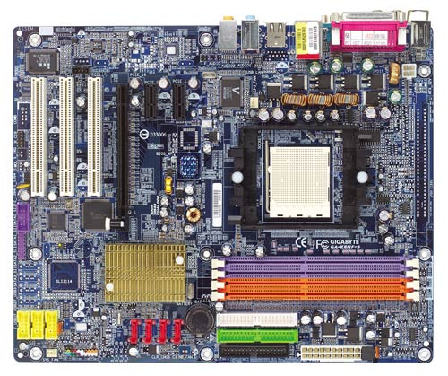
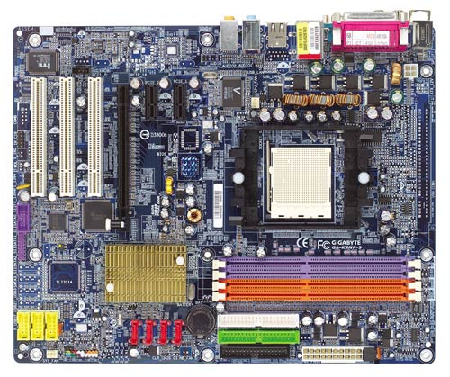

Computer hardware (usually simply called hardware when a computing context is concerned) is the collection of physical elements that constitutes a computer system. Computer hardware is the physical parts or components of a computer, such as the monitor, mouse, keyboard, computer data storage, hard disk drive (HDD), graphic cards, sound cards, memory, motherboard, and so on, all of which are physical objects that are contrast, software is instructions that can be stored and run by hardware.
Software is any set of machine-readable instructions that directs a computer's processor to perform specific operations. A combination of hardware and software forms a usable computing system.